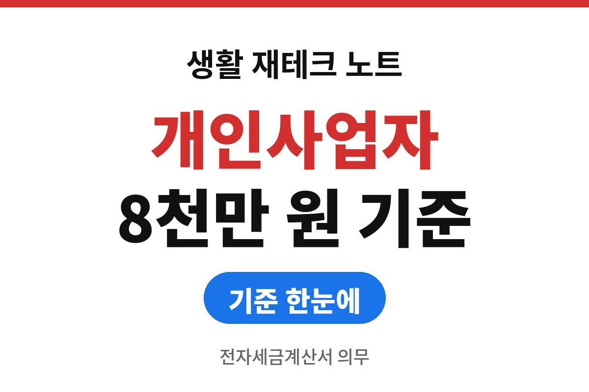
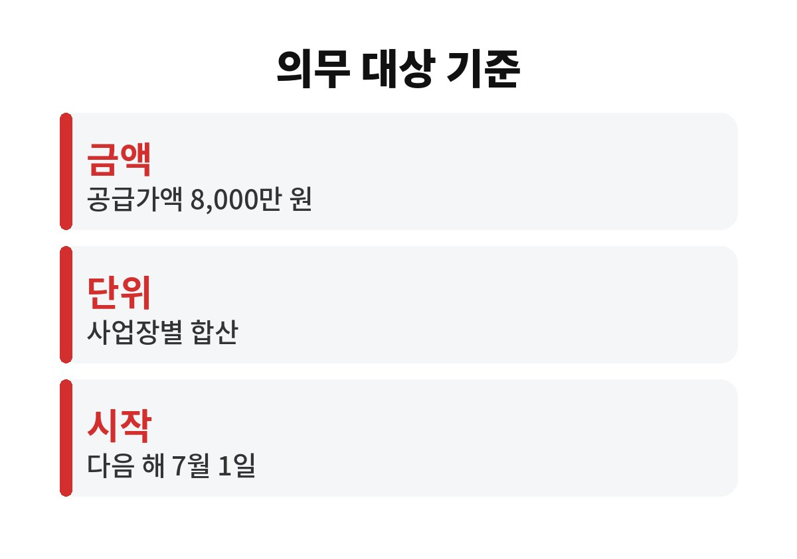
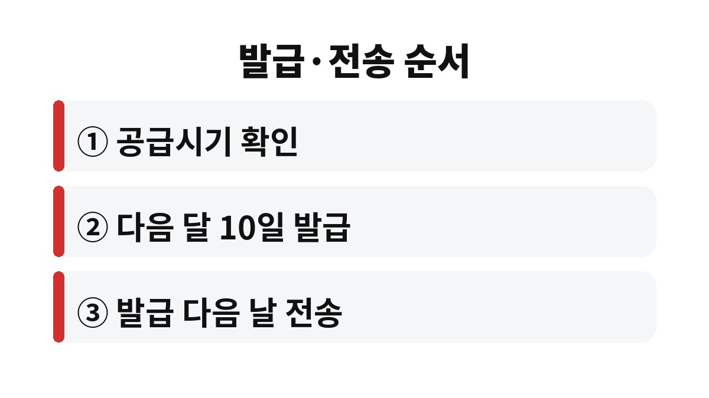

전자세금계산서 의무발급 대상은 직전 연도 사업장의 공급가액(과세와 면세 합계)이 8,000만 원 이상인 개인사업자입니다.
2025년 매출이 이 선을 넘었다면 2026년 7월 1일부터 이미 적용 중이고, 올해 2026년 매출이 넘으면 2027년 7월 1일부터 적용됩니다.
연말이 가까워진 지금이 올해 누적 금액을 한 번 합산해 볼 시기입니다.
판단 기준은 올해 매출이 아니라 직전 연도 매출입니다.
사업장별로 과세 공급가액과 면세 공급가액을 더한 금액이 8,000만 원 이상이면 그다음 해 7월 1일부터 의무 대상이 됩니다.
사업장이 둘 이상이면 합치지 않고 사업장마다 따로 계산합니다.
부가세 신고서에 적힌 과세표준과 면세 수입금액을 더하면 대략의 값이 나옵니다.
공급가액은 부가세를 뺀 금액입니다.
예를 들어 거래처에서 1,100만 원을 입금받았다면 공급가액은 1,000만 원입니다.
입금 총액으로 합산하면 실제보다 커져서 대상이 아닌데 대상으로 착각하게 됩니다.
| 구분 | 내용 | 확인할 곳 |
|---|---|---|
| 합산 대상 | 과세 공급가액 + 면세 공급가액 | 부가세 신고서 |
| 기준 금액 | 8,000만 원 이상 (2024년 7월부터) | 국세청 안내 |
| 판정 단위 | 사업장별 | 사업자등록증 |
| 적용 시작 | 직전 연도의 다음 해 7월 1일 | 관할 세무서 통지 |

세무서는 적용 시작 1개월 전까지 통지하는 것으로 안내되어 있습니다.
다만 통지를 기다리기보다 본인 매출로 먼저 계산해 두는 편이 안전합니다.
날짜는 세 가지로 나뉩니다. 거래한 날, 발급하는 날, 국세청에 전송되는 날입니다.
이 셋을 거래마다 한 줄로 적어 두면 늦게 발급하는 실수가 눈에 띄게 줄어듭니다.
월말에 몰아서 처리하는 습관이 있는 사업장일수록 이 순서를 먼저 점검합니다.
발급한 뒤 금액이나 거래처 정보가 틀린 것을 발견하면 수정 발급이 필요합니다.
수정 사유에 따라 발급 방식이 달라지므로 홈택스의 수정 발급 화면에서 사유를 먼저 고르고 안내를 따릅니다.

이메일로 PDF 계산서를 보내면 발급한 것이라고 생각하기 쉽습니다.
전자세금계산서는 홈택스나 전자세금계산서 발급 프로그램에서 만들어 국세청에 전송된 것을 말합니다.
그 과정을 거치지 않은 PDF는 의무 발급을 채운 것으로 보기 어렵습니다.
의무 대상인데 종이로 발급하거나 늦게 발급하거나 전송을 놓치면 가산세 대상이 될 수 있습니다.
세율은 경우마다 달라서 이 글에는 숫자를 적지 않았고, 국세청 안내와 부가가치세법 조문에서 직접 확인하시길 바랍니다.
손님 대부분이 개인 소비자라 세금계산서 발급 건수가 적은 사업장도 판정은 공급가액 합계로 하므로 건수가 적다는 이유로 건너뛰지 않습니다.
거래처가 종이를 선호한다고 해서 의무 대상 사업자의 발급 방식이 바뀌지는 않습니다.
발급 의무는 물건이나 용역을 공급하는 쪽에 있습니다.
발급 프로그램 사용료가 부담이라면 홈택스의 무료 발급 기능부터 써 보고, 건수가 늘어나면 그때 장부 프로그램 연동을 따져 봅니다.
12월 31일 전에 올해 1월부터의 과세·면세 공급가액을 합산해 8,000만 원에 가까운지 확인해 두시길 바랍니다.
판정이 애매하면 관할 세무서나 국세상담센터(126)에 사업장 기준으로 물어보는 편이 빠릅니다.
올해 합계가 8,000만 원을 넘길 것 같다면 내년 6월 전에 발급 프로그램을 정해 두는 것이 시간상 여유 있는 선택입니다.
※ 본 글은 2026년 기준 공개 자료를 바탕으로 정리한 정보이며, 세금·금융 상품 선택은 본인 상황에 맞게 전문가와 확인하시길 바랍니다.